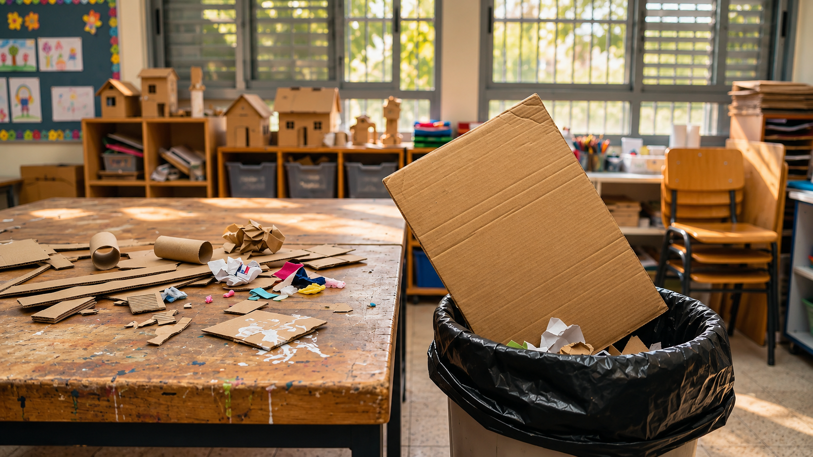

חיסכון במשאבים
שימוש חוזר במשאבים
הקרטון הזה כמעט נזרק. מי עוד צריך אותו?

סוף הסדנה
"רגע, את זה אנחנו זורקים?" שאלה רוני כשראתה חתיכת קרטון גדולה נעלמת לתוך שקית הפינוי. רוני בת האחת־עשרה משתתפת בסדנת יצירה שבה בונים דגמים מחומרים פשוטים. בסיום כל קבוצה מניחה על השולחן את שאריות העבודה: חתיכות קרטון, רצועות בד, גלילי נייר וחלקי פלסטיק נקיים.
מדריכת הסדנה מבקשת להכין את החדר לקבוצה הבאה. כשנפתחת שקית אשפה גדולה, רוני שואלת מדוע חומרים שנשארו שלמים כמעט לגמרי צריכים להיזרק.
לא כל שארית זהה
חלק מהקרטונים רטובים מדבק ואחרים נשארו ישרים ונקיים. יש חתיכות קטנות מאוד ויש רצועות ארוכות. על אחד השולחנות מונח חומר חד שמיועד לפינוי על ידי מבוגר בלבד.
רוני מבינה שאי אפשר לקרוא לכל מה שנשאר "פסולת" או "חומר שימושי". צריך לדעת מהו החומר, מה מצבו והאם הוא בטוח לשימוש נוסף.
רוני מרימה חתיכת קרטון עבה ומגלה שהיא יציבה, אף שעל השולחן שלידה מונחת חתיכה צבעונית שנראית יפה יותר אך מתקפלת בקלות. "אם נבחר רק לפי הצבע, אולי נבנה דגם שלא יחזיק", היא אומרת לחברתה.
המדריכה מבקשת למיין את השאריות בלי לנסות להשתמש בחפצים חדים או מלוכלכים. הקבוצה מגלה שחומרים דומים במראה יכולים להתנהג אחרת: יש כאלה שאפשר לקפל, יש שמחזיקים צורה ויש שסופגים לחות.
קופסה מלאה בלגן
המדריכה מספרת שכבר ניסתה לשמור חומרים מסדנאות קודמות, אך הם נערמו בקופסה אחת גדולה. כשהיה צורך בחומר מסוים, איש לא הצליח למצוא אותו בזמן. בסופו של דבר חלק מן החומרים נשחקו ונזרקו.
רוני מבינה שהשמירה עצמה אינה מספיקה. אם רוצים להשתמש בחומר שוב, צריך לדעת מה נשמר, באיזו כמות ובאיזה מצב.
למי זה יכול לעזור
בקבוצה הבאה יכינו דגמי מבנים. המדריכה אינה יודעת עדיין אילו חומרים יתאימו לאותה פעילות, ולכן אינה רוצה להבטיח שכל שארית תוכל לשמש בה.
רוני רוצה לעזור גם למדריכה וגם לתלמידים הבאים, בלי להפוך את החדר למחסן צפוף ובלי לשמור חומרים מלוכלכים או לא בטוחים.
המגוון מקשה
במהלך חודש נאספות שאריות מסוגים שונים. חלקן מתאימות לקיפול, חלקן לחיבור וחלקן רק לקישוט. רוני מגלה שסיווג לפי צבע בלבד לא מספיק כדי לדעת מה אפשר לעשות עם חומר.
היא מתחילה לחשוב על תכונות כמו גודל, חוזק, ניקיון וגמישות, ועל ההבדל בין שימוש חוזר לבין מִחזור שבו החומר עובר עיבוד.
שבוע לאחר מכן מגיעה קבוצה להכין גשרים קטנים מקרטון. תלמיד מבקש "חתיכה ישרה וחזקה", אבל בקופסת השאריות כולם מוצאים רק ערימה מעורבבת. רוני מזהה שם חומר מתאים בדיוק, אך היא אינה מצליחה לשלוף אותו בלי להפיל חצי מהקופסה.
פתאום היא מבינה ששימוש חוזר דורש יותר מהחלטה טובה לא לזרוק: צריך לדעת מה יש, באיזה מצב הוא נמצא ולמי הוא עשוי להתאים. גם חומר מצוין שאי אפשר למצוא בזמן עלול להישאר ללא שימוש.
מה עדיין צריך לברר
ידוע אילו חומרים נותרו היום, כמה מקום אחסון יש ומהן הפעילויות המתוכננות בקרוב. לא ידוע אילו חומרים יידרשו בעתיד, כמה זמן יישארו תקינים ומי יבדוק את בטיחותם.
רוני שואלת איזה מידע נחוץ כדי להחליט אם חומר ראוי לשימוש נוסף ולא רק כדי להצדיק שמירתו.
לפני שממציאים
הכיתה מבינה שהאתגר אינו "לשמור הכול" אלא לזהות מה באמת יכול לקבל שימוש נוסף ולמצוא דרך שנוחה לצוות ולתלמידים. לפעמים ההחלטה הנכונה תהיה דווקא לפנות חומר שאינו בטוח.
כיצד מחליטים אילו תכונות חשוב לתעד? מי קובע אם חומר מתאים? ואיך אפשר להעריך אם תהליך השמירה והבחירה חוסך משאבים או רק מוסיף עבודה?
רמז מעולם החלל
בתחנת החלל נבדקה טכנולוגיה שממחזרת שאריות פלסטיק לחומר גלם חדש להדפסה תלת־ממדית. זהו מִחזור, השונה משימוש חוזר באותה חתיכה בלי לעבד אותה. בשני המקרים חייבים לבדוק את סוג החומר, מצבו ובטיחותו. מה צריך לדעת על השאריות בסדנה לפני שמחליטים לשמור אותן?
אחרי הקריאה — בדף הצוות
שוחחו בצוות וענו על סמך המידע שבכתבה. אם חסר מידע, רשמו שאלה להמשך.
- למי אתם רוצים לעזור בסיפור?
- מה הוא מנסה לעשות ומה מקשה עליו?
- מה הוא צריך להיות מסוגל לעשות?
- מה עוד תרצו לברר לפני שתפתחו רעיונות?